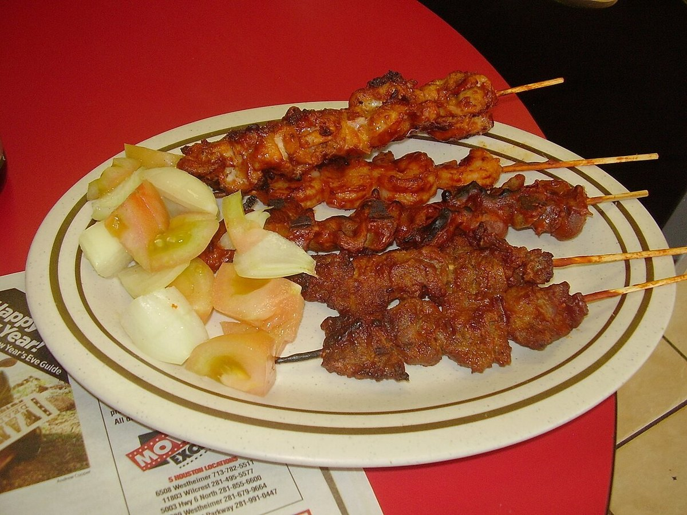

Ghana
Il riso e fagioli della colazione in Ghana, colorato di bruno dalle foglie di sorgo, servito con shito, gari, uovo e platano fritto.

← Torna alle ricette

 NigeriaMoi moi
NigeriaMoi moi NigeriaAyamase (salsa verde con riso ofada)
NigeriaAyamase (salsa verde con riso ofada)